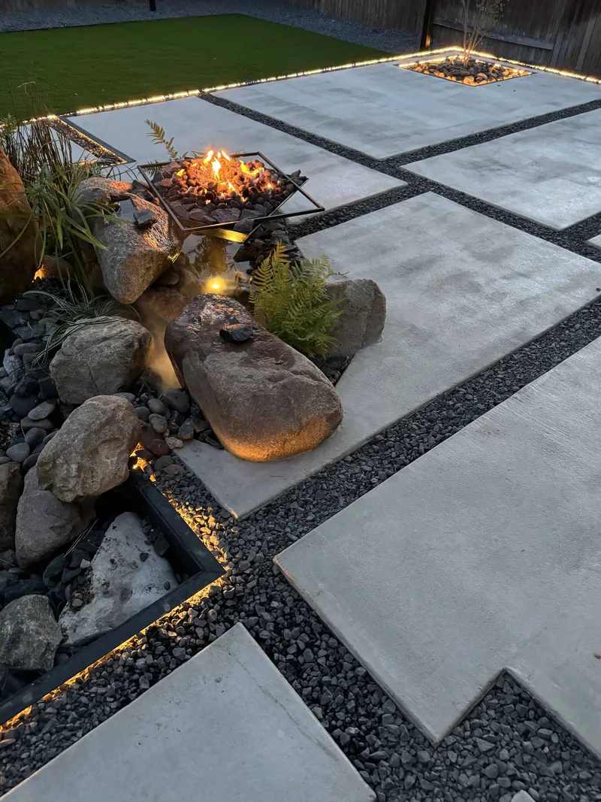

Impervious cover is the City of Austin’s term for any surface that keeps rain from soaking into the ground, and on a house lot the limit comes from the zoning district: 40 percent of the lot in SF-1, and 45 percent in SF-2 and SF-3. The house, the driveway, concrete, and anything under a roof count in full. An uncovered wood deck with gaps between the boards counts at half, and the water in a pool is left out. Every rule here comes from the City’s Land Development Code and Environmental Criteria Manual as they read on November 26, 2026. Red Agave Landscape designs and builds patios, decks, and pergolas in Austin, and we check the lot’s limit during design.
What Does the City of Austin Count as Impervious Cover?
The definition is in Section 25-1-23 of the Land Development Code:
"impervious cover means the total area of any surface that prevents the infiltration of water into the ground, such as roads, parking areas, concrete, and buildings."
The count follows Section 25-8-63 and Section 1.8.1 of the Environmental Criteria Manual.
| Surface | How the City counts it | Source |
|---|---|---|
| House, garage, and any other building | In full | 25-8-63(B)(4) |
| Driveways and parking areas | In full. The manual adds unpaved drives "compacted by vehicle use" | 25-8-63(B)(2) and (3), Manual 1.8.1(B) |
| Concrete: patios, walks, and pads | In full | 25-8-63(B)(5) |
| "Impermeable construction covering the natural land surface" | In full | 25-8-63(B)(6) |
| Covered patio, covered porch, or covered deck | In full. "A covered deck shall be considered impervious." | Manual 1.8.1(B) |
| Uncovered wood deck "that has drainage spaces between the deck boards and that is located over a pervious surface" | "50 percent of the horizontal area of the deck" | 25-8-63(B)(7) |
| Pool coping and retaining walls | Counted, as a line on the City’s calculation sheet | Residential permit application |
| Water surface of a ground level pool, fountain, or pond | Left out | 25-8-63(C)(7) |
| Gravel "placed over pervious surfaces that are used only for landscaping or by pedestrians and are not constructed with compacted base" | Left out | 25-8-63(C)(8) |
| Eaves, overhangs, balconies, and awnings | Up to two feet of projection is left out, for residential building permit review only | 25-8-63(C)(13) |
What Is the Impervious Cover Limit on My Lot?
The zoning district sets it. The City’s glossary says: "The ratio of impervious cover allowed on a property depends on the zoning designation." The numbers are in the table in Section 25-2-492, beside a second limit for building coverage.
| Zoning district | Maximum impervious cover | Maximum building coverage |
|---|---|---|
| SF-1, single-family large lot | 40 percent | 35 percent |
| SF-2, single-family standard lot | 45 percent | 40 percent |
| SF-3, family residence | 45 percent | 40 percent |
| SF-4A, single-family small lot | 65 percent | 55 percent |
| SF-5, urban family residence | 55 percent | 40 percent |
| SF-6, townhouse and condominium | 55 percent | 40 percent |
| LA, Lake Austin | Set by slope and by the date of the plat | None listed |
The SF-4A figures are in Section 25-2-779, which the table points to. Four notes:
- Building coverage is a separate limit. Section 25-1-21 defines it as "the area of a lot covered by buildings or roofed areas." A roofed patio cover counts against both limits. A slab counts against one
- The percentage is of the lot. The City’s permit application divides the impervious cover by the lot area
- Lake Austin lots go by slope. Under Section 25-2-551, a lot platted after April 22, 1982 is held to 20 percent on slopes of 25 percent or less and 10 percent on slopes of 25 to 35 percent. Older plats have their own scale
- One exception runs upward. Section 25-2-556 lets the building official approve up to 55 percent in SF-2 or SF-3 on a lot platted before January 2, 1989 that adjoins open space such as a golf course, with other conditions
A lot can also carry a restriction of its own, in a note on its plat or in a homeowners association’s recorded documents. Our Circle C page and Circle C approval guide give one example.
Did the HOME Amendments Change the Limits?
Not the district numbers in the table. The City’s HOME Amendments page says a single-family residential use "will continue to be reviewed under existing regulations." HOME added rules for more units and for small lots:
- Two or three units (HOME Phase 1, Ordinance 20231207-001, adopted December 7, 2023): Section 25-2-773 sets "maximum building coverage is 40 percent" and "maximum impervious cover is 45 percent" for a duplex, two-unit, or three-unit use. The City notes that this raised the limit for those uses in SF-1. The same section says: "Impervious cover in a front yard may not exceed 40 percent."
- Small lots (HOME Phase 2, Ordinance 20240516-006, adopted May 16, 2024): one house on a lot of at least 1,800 square feet and less than 5,750, in SF-1, SF-2, or SF-3. Section 25-2-779 says: "The maximum impervious cover is the maximum allowed in the base zoning district regulations." Driveways and parking areas can cover no more than 50 percent of the front yard, flag lots excepted
Does My Watershed Add a Second Limit?
Chapter 25-8 of the code sets impervious cover figures by watershed, and they are often repeated as if they were each lot’s limit. They are not. Section 25-8-61(B) says:
"The impervious cover requirements of this Subchapter do not restrict impervious cover on a single-family or duplex lot but apply to the subdivision as a whole."
| Watershed class | What Chapter 25-8 sets for single-family use | Section |
|---|---|---|
| Urban | The zoning limit in Section 25-2-492 | 25-8-372(B) |
| Suburban | 50 percent of gross site area on lots of 5,750 square feet or more, and 55 percent on smaller lots. In the Lake, Rattan, Buttercup, South Brushy, and Brushy Creek watersheds: 45 and 55 | 25-8-392 |
| Water Supply Suburban | 30 percent of net site area | 25-8-423(B) |
| Water Supply Rural | A density limit in place of a percentage: one unit for each two acres | 25-8-453(B) |
| Barton Springs Zone | 15 percent of net site area in the recharge zone, 20 percent in the Barton Creek part of the contributing zone, and 25 percent in the rest of the contributing zone | 25-8-514(A) |
Section 25-8-64, which sets the area the City assumes for each lot when it reviews a subdivision, "does not restrict impervious cover on an individual lot," with one exception: a lot "restricted to a lesser amount of impervious cover." Section 25-8-303 requires a plat note "stating the impervious cover and construction requirements for the lot" for a single-family lot on a slope steeper than 15 percent, outside the urban watersheds. Read the notes on your recorded plat.
In the Barton Springs Zone, older lots have a rule of their own. Section 25-8-516(A) says the Save Our Springs article "does not apply to development on a single platted lot" that existed on November 1, 1991, when the work is a single-family or duplex home and "improvements incidental to that residential use."
For a lot platted after that date, the code does not state in one place how the 15, 20, and 25 percent figures reach the lot. Section 25-8-61(B) points to the subdivision as a whole. Section 25-8-515 says the Save Our Springs article is "not subject to the exemptions, special exceptions, waivers, or variances allowed by Article 1 (General Provisions)." Ask Development Services to confirm the number for your lot, in writing, before you design.
How Do I Find My Lot’s Zoning and Watershed?
With the City’s Property Profile map.
- Zoning: run an address search. The City’s Residential Zoning Application Guidelines list what it returns, including the legal description, the zoning district, and the lot area. A surveyor confirms the lot area
- Watershed: in the layer list, search for the layer named Austin Watershed Regulation Areas. It marks each area Urban, Suburban, Water Supply Suburban, Water Supply Rural, or Barton Springs Zone. Separate layers show the Edwards Aquifer recharge and contributing zones
- Who to ask: Austin Development Services, at DSDHelp@austintexas.gov, 3-1-1 or 512-974-2000, or in a 20-minute residential zoning appointment, online or at 6310 Wilhelmina Delco Drive
For the arithmetic, the City’s Residential New Construction and Addition Permit Application ends with a calculation aid. It adds the building coverage, driveway, sidewalks, uncovered patio, uncovered wood decks at 50 percent, concrete flatwork, pool coping, and retaining walls, then divides by the lot area.
Do Turf, Gravel, Decomposed Granite, Pavers, and Pergolas Count?
| Material | What the City text says |
|---|---|
| Gravel | Left out only when all three conditions are met: over pervious ground, used only for landscaping or by pedestrians, and "not constructed with compacted base." A gravel driveway counts |
| Decomposed granite | Not named in Section 25-8-63 or in the manual |
| Pavers | A paver patio is a paved area, and the City’s application counts "paved areas, walkways, and driveways" |
| Permeable pavers | The manual lists "permeable interlocking concrete pavement" as porous pavement. Porous pavement is left out only for "pedestrian walkways and multi-use trails," built to the manual, outside the Edwards Aquifer Recharge Zone. The manual adds: "This exemption does not apply to patios, plaza, sport courts, or other non-walkway pedestrian surfaces" |
| Artificial turf | Not named in Section 25-8-63, in the manual, or on the City’s permit application |
| Pergola with open rafters | Not named. The text counts roofed areas, covered patios, covered porches, and covered decks. What is on the ground under a pergola is counted by its own rule |
For a material the text does not name, the only rule in the code is the general definition at the top of this page. One fact bears on turf and decomposed granite: the gravel rule stops at a surface "constructed with compacted base," and we lay artificial turf on compacted decomposed granite.
The City’s Code Interpretation Library listed no interpretation on impervious cover on November 26, 2026. Ask Development Services before a design relies on turf, decomposed granite, or an open pergola being left out.
Does a Patio That Needs No Permit Still Count?
Yes. The City’s list of work exempt from building permits includes "A sidewalk, driveway, or concrete flatwork that is not located in the public right-of-way." The code behind that list, R105.2 in Section 25-12-243, adds:
"Work exempt from a permit must still comply with this code and all other applicable laws and City Code requirements."
A slab poured with no permit still adds to the lot’s impervious cover, and the City’s permit application asks for the existing figure.
Subchapter F, widely called the McMansion ordinance, limits a house inside its boundary to "the greater of 0.4 to 1.0 floor-to-area ratio or 2,300 square feet of gross floor area," and it defines gross floor area as "all enclosed space." It sets no impervious cover number.
How Do We Design Within a Limit?
Red Agave Landscape designs and builds patios, decks, and pergolas in Austin, and we check the lot’s limit during design. The City’s text gives a plan three ways to add outdoor room for less counted area.
- A wood deck in place of a slab: uncovered, with gaps between the boards, over pervious ground, it counts at 50 percent
- Gravel between paved areas: gravel over soil with no compacted base, used for landscaping and foot paths, is left out
- Roofs only where they are needed: a roofed cover counts in full, as impervious cover and as building coverage

The consultation is free, and the CAD plan is included. See our landscape design page.
What Sources Did We Use?
Every rule above comes from the City of Austin’s own text, read on November 26, 2026. The code is amended often, so check the current section before you rely on a number.
- City of Austin Land Development Code on Municode, Supplement 174, codified through Ordinance No. 20260423-048: Sections 25-1-21 and 25-1-23, Section 25-2-492, Sections 25-2-551 and 25-2-556, Sections 25-2-773 and 25-2-779, Subchapter F, Chapter 25-8, and Section 25-12-243
- City of Austin Environmental Criteria Manual on Municode, codified through Rule No. R161-25.21: Section 1.8.1 and Section 1.6.7, part E
- Austin Development Services: HOME Amendments, work exempt from building permits, Property Profile, Residential Plan Review, Code Interpretations, the glossary, and two documents on its forms page: the Residential New Construction and Addition Permit Application dated June 17, 2025, and the Residential Zoning Application Guidelines dated July 11, 2024
Impervious Cover in Austin
What is the impervious cover limit for SF-3 in Austin?
45 percent of the lot, with building coverage limited to 40 percent, under Section 25-2-492 of the Land Development Code. SF-2 has the same limits. SF-1 is 40 and 35 percent.
Does a deck count as impervious cover in Austin?
An uncovered wood deck with drainage spaces between the boards, over a pervious surface, counts at 50 percent of its area. A covered deck counts in full. The code does not name composite boards.
Does a swimming pool count as impervious cover in Austin?
The water surface does not. The City’s calculation sheet counts the pool coping, and the deck around the pool counts by its material.
Does artificial turf count as impervious cover in Austin?
The City’s code, its Environmental Criteria Manual, and its permit application do not name artificial turf. The general definition is any surface that prevents water from soaking into the ground. Confirm with Austin Development Services before a plan relies on turf being left out.
Can I get a variance from the impervious cover limit in Austin?
Requests to vary zoning site development regulations go to the City’s Board of Adjustment. The Save Our Springs article allows none: Section 25-8-515 says its requirements are not subject to variances.